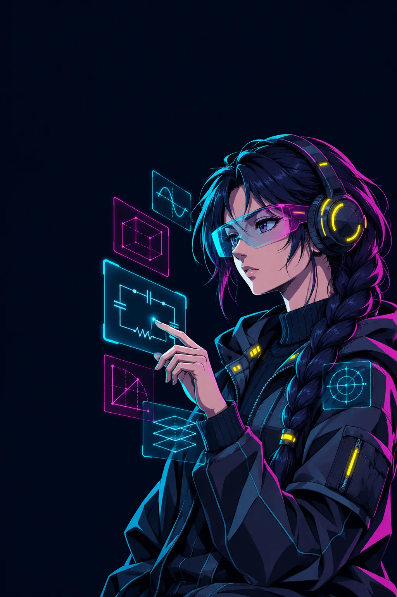

Sehari bersama Raptus
- PagiBelajarSekali klik, sesi terakhirku kebuka. Tinggal jawab kartu soal.
- SiangLowongan baruPC nemu lowongan, kartunya langsung nyampe ke HP.
- MalamLoL + Tilt GuardKalah 2x? Dia nanya: "mau istirahat?"
PC
Satu panel di PC buat semuanya: kuliah, game, sampai ngerawat komputer.
Mulai hariSekali klik, rencana hari ini kebuka.Lihat detail
Kenalan dulu sama Raptus 🤖
Halo! Aku mau cerita soal sistem yang aku bikin sendiri, namanya Raptus. Bayangin asisten pribadi yang hidup di PC dan HP-ku: dia ngatur kuliah, jagain PC, nyariin kerja, dan ngasih tahu kalau ada yang penting.
Bentuknya dua: Allied Mastercomputer (aplikasi panel di PC) dan aplikasi Android yang selalu sinkron sama PC. Aku jelasin tombolnya satu-satu ya.
🎯 Fokus hari ini (paling atas di panel)
- Buka Rencana: buka rencana hari ini di Chrome, isinya blok belajar yang fleksibel dan langkah pertama yang harus aku kerjain.
- Belajar: buka jendela berisi 5 mata kuliahku. Detailnya ada di bagian Belajar.
📊 Strip di atas panel
Selalu nunjukin beban CPU, RAM, seberapa sibuk disk, dan seberapa penuh SSD. Ada juga jumlah pesan belum dibaca di Gmail dan WhatsApp. Angka 0 artinya beneran nol, kalau tanda "—" artinya datanya belum ada. Dia nggak pura-pura tahu.
Kuliah & fokusBahan kuliah, timer, dan pemblokir gangguan.Lihat detail
- Klik Fokus Belajar
- Pomofocus kebuka
- Opsional: Udemy + Freedom
- Aku tekan Start
📚 Bagian Kuliah & Sumber
- Rencana Belajar: jadwal belajar harian.
- Lanjut Udemy: Udemy itu situs kursus video online. Tombol ini langsung buka video terakhir yang aku tonton.
- Drive: buka file kuliahku di Google Drive.
- Catatan Kuliah: buka catatan kuliah.
- Belajar Anime: aku pilih anime dan topik, terus sistem nyiapin teks buat ChatGPT supaya pelajarannya diajarin lewat cerita anime itu. Materinya tetap nomor satu, ceritanya cuma bumbu.
- Laporan Riset: buka draf laporan riset mahasiswaku di Word.
- Ada juga tombol ke kursus video favorit (fisika, trigonometri, rangkaian listrik).
🧘 Bagian fokus
- Fokus Belajar: mode fokus belajar. Dia buka Pomofocus, yaitu situs timer: 25 menit kerja, istirahat sebentar, gitu terus. Kalau aku centang, Udemy dan Freedom ikut kebuka.
- Freedom: ini aplikasi pemblokir gangguan. Selama sesi jalan, Instagram, YouTube, game, dan sejenisnya nggak bisa dibuka sama sekali. Tombol ini buka panel Freedom, tapi aku sendiri yang tekan Start, jadi sistem nggak pernah ngunci aku diam-diam.
- Meditasi & Buku Harian: bikin catatan meditasi atau buku harian baru, disimpan rapi per tanggal dan topik di PC-ku.
- What Now?: kalau bingung mau ngapain, aku isi punya waktu berapa lama dan energiku gimana. Dia baca rencana hari ini dan kasih satu langkah konkret. ChatGPT cuma opsional, keputusannya dibuat dari data lokal.
Akses cepatSemua aplikasiku, tinggal satu klik.Lihat detail
Akses cepat, game & LoL 🎮
⚡ Akses Cepat
Kotak-kotak buat buka aplikasi sekali klik. Yang sering dipakai tampil duluan, sisanya muncul lewat Tampilkan alat lain:
- ChatGPT, Claude: asisten AI.
- Kindroid: aplikasi teman ngobrol AI.
- Gmail, WhatsApp: dibuka, dan penghitung pesannya di panel di-reset.
- Instagram: langsung ke postingan tersimpan. YouTube: langsung ke video yang aku suka. Spotify: langsung ke lagu yang lagi sering aku putar.
- Discord, Netflix, Chrome, Kalender, Buku (folder buku).
- Crunchyroll: situs streaming anime. Dia nanya dulu: lanjut biasa, atau cek VPN Amerika dulu baru buka.
- Obsidian: aplikasi catatan pribadiku.
- Inventaris: stok barang di rumah, tanggal kedaluwarsa, daftar belanja, dan bisa impor dari Wolt (aplikasi pesan antar).
- Sesi Merenung: pemutar video santai buat merenung, kalau nggak cocok bisa ganti klip.
Game & LoLMain lebih enak, dan direm kalau lagi tilt.Lihat detail
- Kalah 2x berturut-turut
- Habis game: "mau istirahat?"
- Jawab Ya
- Antrean terkunci, maks. 1 jam
- Kebuka sendiri
🕹️ Game
- GFN: singkatan GeForce NOW, layanan cloud gaming. Game-nya jalan di server NVIDIA dan cuma di-streaming ke PC-ku.
- GFN Last: balik ke game terakhir. Kalau nggak yakin game-nya apa, dia buka menu utama aja, nggak asal nebak.
- GFN 4K60 dan GFN Mulus: ganti setelan streaming, gambar paling tajam atau gerakan paling mulus (120 FPS).
- Semua Game: menu semua peluncur (GFN, Xbox, Steam, Epic).
- Jurnal Game: pas balik ke game lama, dia nunjukin catatan terakhir dan langkah selanjutnya, jadi nggak bingung "tadi sampai mana".
- AI Dalam Game (F8): panel AI yang muncul di atas game, buat nanya tanpa keluar game. AI Setup: tempat nyambungin AI-nya.
- Mode Game: PC masuk mode performa tinggi, fitur Game Mode Windows nyala, perekam layar bawaan Windows mati, animasi panel dikurangin. Resolusi, jaringan, dan VPN nggak disentuh.
- Mode Normal: semua dibalikin persis seperti sebelumnya.
⚔️ Asisten LoL (League of Legends)
Satu jendela buat semua urusan LoL:
- Ranked: nyiapin pertandingan ranked dengan champion andalanku.
- Casual: nyiapin lobi Draft Pick. Tombol cari lawannya tetap aku yang pencet.
- Match Coach: buka Blitz, aplikasi statistik dan tips buat LoL.
- Pelatih (coach): saran pendek dari ChatGPT muncul di layar selama main, nggak ngerebut kursor atau menghalangi klik. Setelah game ada coaching juga.
- Tilt Guard: kalau aku kalah 2x berturut-turut di ranked Solo/Duo, habis game dia nanya "mau istirahat?". Antrean cuma dikunci kalau aku jawab Ya, maksimal 1 jam, dan bisa aku buka kapan aja. Game nggak pernah ditutup paksa.
Rawat PCLayar, RAM, internet, semua bisa dicek.Lihat detail
- Cari masalah yang dikenal
- Yang aman dibenerin
- Dicek ulang
- Sisanya dilaporin ke aku
Alat PC & perawatan 🩺
🖥 Profil Layar
Ganti setelan monitor sekali klik:
- Game 120 Hz: paling mulus buat main.
- 4K Desktop: paling tajam buat kerja.
- 4K Film HDR: warna paling bagus buat nonton.
Ketiganya otomatis matiin layar laptop. Balik ke susunan layar awal balikin susunan awal. Ada Cek juga buat ngecek kecerahan monitor.
🩺 Status Sistem
- Kontrol Sistem: daftar semua penjaga background, kondisinya, dan kapan terakhir lapor. Laporan yang sudah basi nggak dihitung "jalan".
- Pantauan Proyek: daftar pekerjaan pengembangan Raptus dan apa yang lagi nyangkut.
- Panduan Pemakaian: panduan singkat aplikasinya.
- Diagnosis Update GFN: ngecek apakah update GeForce NOW aman buat sistemku, tanpa buka game.
- Penghitung Notifikasi: nyalain atau jeda penghitung Gmail/WhatsApp.
- Preferensi Gerakan: ngurangin animasi panel.
🔧 Perawatan
- Laporan RAM: ngukur memori fisik dan virtual, plus aplikasi mana yang paling boros.
- Tes Jaringan: buka tes kecepatan internet Cloudflare.
- Ukur & Perbaiki: ngukur koneksi, paket yang hilang, dan DNS (buku alamat internet). Dia cuma bertindak kalau masalahnya terbukti, yaitu nge-refresh DNS. Nggak ada "tweak internet ajaib".
- Kembalikan Setelan Jaringan: balikin setelan DNS lama.
- Perawatan Dalam yang Aman: klik biasa bikin laporan kondisi PC. Klik kanan, setelah aku izinin sebagai admin, dia bikin titik pemulihan Windows dulu, baru ngecek Windows, disk, dan SSD. File pribadi dan akun browser nggak disentuh. File sampah cuma didaftar, nggak dihapus otomatis.
- Perbaiki Otomatis: nyari masalah yang memang pernah kejadian: penjaga yang mati, kunci Tilt Guard yang rusak, Game Mode yang lupa dimatiin, DNS bermasalah, SSD hampir penuh. Yang aman langsung dibenerin dan dicek ulang, yang butuh aku dikasih tahu. Game yang lagi jalan nggak diganggu.
- Laporan Error: ngumpulin log, kondisi sistem, dan screenshot jadi satu laporan yang tetap ada di PC-ku.
- Cek Update: ngecek versi baru. Kalau ada, diverifikasi dulu baru dipasang.
Otomatis
Aku nggak klik apa-apa, tapi dia kerja terus.
6 penjagaJagain PC biar tetap lancar.Lihat detail
Yang jalan otomatis di belakang ⚙️
Ini bagian yang nggak kelihatan. Aku nggak perlu klik apa-apa.
🛡️ 6 penjaga yang selalu aktif
- Penjaga beban: kalau CPU atau RAM berat terus (bukan cuma lonjakan sebentar), dia nurunin prioritas aplikasi background biar yang lagi aku pakai tetap lancar. Nggak ada aplikasi yang ditutup paksa, dan prioritasnya dibalikin lagi setelahnya.
- Penjaga internet: gangguan sebentar dia cuekin. Kalau koneksi gagal terus, baru dia bertindak dengan aman.
- Penjaga disk: PC nge-freeze sering bukan gara-gara CPU, tapi disk yang antreannya penuh. Dia nyari aplikasi penyebabnya, nurunin prioritasnya, dan ngawasin ruang kosong SSD.
- Pembaca log Windows: kalau game tiba-tiba nutup atau PC restart sendiri, dia nyimpen penyebabnya dari catatan Windows.
- Pengumpul data: nyimpen kondisi PC secara berkala, bahan buat tombol What Now.
- Pendamping LoL: mantau pertandingan buat coach dan Tilt Guard.
Contoh: kalau salah satu penjaga crash, sistem nyalain lagi otomatis dengan jeda yang makin panjang. Jadi nggak pernah crash terus-terusan sampai PC berat.
Update sendiriDites dulu. Kalau gagal, balik ke versi lama.Lihat detail
- Kode berubah
- Tes otomatis
- Build + pasang
- Cek kesehatan
- Gagal? Balik ke versi bagus
🔄 Update sendiri
Begitu aku ubah kodenya, sistem jalanin tes otomatis. Satu aja gagal, update batal. Kalau lulus, aplikasi di-build, dipasang, lalu dicek apakah semua masih sehat. Kalau ternyata bermasalah, otomatis balik ke versi terakhir yang bagus. Aku ubah satu tombol, beberapa saat kemudian versi barunya sudah kepasang tanpa aku sentuh.
Pemantau freezePC macet? Penyebabnya bisa dicari.Lihat detail
🧊 Pemantau freeze
Windows terus merekam kondisi PC di background. Kalau PC nge-freeze, aku klik shortcut Barusan Freeze di desktop, dan semua catatan beberapa menit terakhir langsung dikumpulin. Jadi penyebabnya bisa dicari, bukan ditebak.
Kampus & kerjaEmail penting dan lowongan baru dicariin.Lihat detail
🏫 Pantau kampus & email
PC ngecek Moodle (situs kampus buat materi dan tugas) dan sumber resmi lainnya, termasuk Neptun (sistem administrasi kampus: nilai dan jadwal ujian) kalau sesi login-ku aktif. Email juga dibaca dan dikasih prioritas: Kritis, Tinggi, Normal, atau Rendah. Misalnya email dosen soal ganti ruang ujian langsung bikin HP bunyi.
💼 Tiap 6 jam
PC nyari lowongan kerja dari halaman karier resmi perusahaan, plus event publik di sekitarku.
PC ke HPSemua hasilnya nyampe ke HP.Lihat detail
☁️ PC ke HP
Semua hasilnya dikirim terus ke cloud privat, lalu HP dapat push notification. Kalau suatu sumber gagal diakses, data lamanya tetap tampil dengan label "data lama". Prinsipku: nggak ada data karangan.
Belajar
AI ngajar pakai aturan yang aku bikin dari cara belajarku sendiri.
A gas is heated at constant pressure. What happens to its volume?
Pilih satu. Begini rasanya kartu soalku.
Sekali klikPilih mata kuliah, langsung lanjut dari sesi terakhir.Lihat detail
- Klik Belajar
- Pilih 1 dari 5 kartu
- Chrome kebuka
- Proyek ChatGPT, sesi terakhir
- Kartu soal + progress bar
- Tes akhir Part
Mode belajar (bagian favoritku) 📚
Pas aku klik Belajar, muncul 5 kartu: Fisika, Listrik, Matematika, Ilmu Material, Informatika. Di atasnya ada tombol rencana hari ini dan pencatat waktu belajar.
Tiap kartu punya tombol Mulai belajar. Chrome langsung kebuka di proyek ChatGPT khusus mata kuliah itu, tepat di sesi terakhir, jadi aku tinggal lanjut. Ada juga tombol Rencana tersimpan buat lihat rencana ujiannya. Informatika punya dua jalur: Teori (latihan ujian) dan Scratch (bikin game kecil, tiap langkahnya aku yang bangun).
Aturan mengajarSoal pendek, ada progress, nggak ada tembok teks.Lihat detail
Yang bikin beda: tiap proyek ChatGPT sudah diisi aturan mengajar yang aku susun dari analisis ratusan pesan belajarku sendiri. Aku cari sesi mana yang berhasil dan kenapa, terus jadiin aturan:
- Mulai dari ujian: AI sebut tanggal, cakupan, dan sumbernya, lalu bagi topik jadi beberapa Part per hari. Info yang belum pasti dikasih label.
- Nggak ada pemanasan panjang. Kalau aku nyangkut, dasarnya dibenerin langsung di soal itu.
- Progress bar di tiap jawaban: berapa persen Part ini dan berapa persen siap ujian. Naiknya terasa, bukan +1% yang bikin down.
- Penjelasan pendek + gambar + contoh nyata. Nggak ada tembok teks.
- Kartu soal pilihan ganda yang bisa diklik. Soalnya bahasa Inggris (bahasa ujianku), penjelasannya bahasa ibuku. Benar: lanjut. Salah: alasan singkat, terus soal baru dengan tipe sama.
- Akhir Part: tes campuran 10–12 soal tanpa dikasih tahu topiknya, lalu yang salah diulang.
- Aku bilang "nggak ngerti": dijelasin dengan cara lain yang lebih simpel. Aku bilang "cukup" atau "bosan": langsung lompat ke level berikutnya atau ke tes.
- Durasinya aku yang nentuin. Bisa juga minta AI jadi dosen galak atau karakter anime.
Contoh sesiSatu sesi termodinamika, dari awal sampai tes.Lihat detail
🔥 Contoh: Termodinamika
AI buka: "Hari ini Part II, gas dipanaskan dengan tekanan tetap." Muncul gambar silinder dan piston. Kartu soal: "A gas is heated at constant pressure. What happens to its volume?" Aku pilih "increases", benar, lanjut.
Terus masuk rumus dan contoh pakai angka. Soal berikutnya: berapa total panas yang dibutuhkan? Aku salah karena cuma ngitung kerja gasnya dan lupa energi yang bikin gasnya makin panas. AI ngasih tahu itu dalam satu kalimat, kasih soal baru, kali ini benar, progress naik. Di akhir Part ada 12 soal campuran, aku salah 3, dan tiga itu diulang pakai angka beda.
Tiap mata kuliah punya gayanya: Fisika mulai dari gambar dan tebakan, Listrik dari menandai rangkaian, Matematika dari video Udemy lalu mini tes, Material dari struktur ke kegunaan.
Dari HP ada tombol Siapkan di PC: aku pencet di jalan, perintahnya dikirim lewat cloud, dan PC nyiapin sesi belajarnya. Ditekan dua kali pun tetap satu sesi.
Dan sistemnya jujur: sekadar baca materi atau sekali jawab benar nggak dianggap "sudah hafal".

image generated with AIHP
Semua yang penting ada di saku.
Hari ini & kalenderJadwal, tugas, dan hitung mundur ujian.Lihat detail
Aplikasi HP 📱
Di HP ada 5 tab bawah (Hari ini, Kalender, Notifikasi, Otomasi, Status), plus tombol cepat To-do, Belajar, Kerja, dan Tugas proyek. Kalau offline, tetap kebuka pakai data terakhir. Bisa ganti bahasa Turki/Inggris.
🕐 Hari ini
jam, kuliah yang lagi jalan dan sisa waktunya, ringkasan tugas (akan datang, terlambat, perlu dicek). Kalau jadwal bentrok, muncul peringatan.
📅 Kalender
3 tampilan: jadwal kuliah, tugas & ujian, semua event. Tiap item ada statusnya, misalnya "jam terverifikasi" atau "menunggu konfirmasi". Ada hitung mundur ujian: "Ujian 3 hari lagi". Kalau belum resmi, ditulis "menunggu konfirmasi".
To-do & belajarJalan tanpa internet, dan bisa nyuruh PC siap-siap.Lihat detail
✅ To-do
tugas pribadi, tugas kampus, dan target belajar harian. Bisa dipakai tanpa internet. Di kereta aku nambah "beli kertas grafik", begitu dapat Wi-Fi langsung sinkron.
📚 Belajar
5 kartu mata kuliah, isinya strategi belajar, jumlah sumber terverifikasi, hitung mundur ujian, dan riwayat sesi. Tombol Siapkan di PC nyuruh PC nyiapin sesi, tombol Buka di HP langsung ke ChatGPT-nya.
Cari kerjaKartu lowongan lengkap, gaji sampai syarat bahasa.Lihat detail
💼 Kerja
kartu lowongan lengkap banget:
- jenis (magang, kerja mahasiswa, junior), lokasi, bidang
- tugas harian dan skill yang dibutuhin
- syarat bahasa: hijau "bahasa Inggris cukup", kuning "tanya dulu"
- gaji, diubah jadi kira-kira per bulan, atau "nggak dicantumin"
- cocok nggak buat mahasiswa semester awal, tingkat kesulitan, nilai buat CV
- langkah melamar dan pertanyaan siap pakai buat perusahaan
Bisa difilter, dan yang masih buka serta cukup bahasa Inggris naik ke atas.
Notifikasi & eventEmail penting dan acara yang cocok.Lihat detail
🔔 Notifikasi
filter semua, email penting, atau email. Tiap email ada prioritasnya, dan tombol buat buka email aslinya.
🎟️ Event
maksimal 3 rekomendasi di depan, sisanya bisa dicari. Tiap event dicek: gratis atau bayar (kalau nggak dicantumin, nggak dianggap gratis), boleh buat mahasiswa atau nggak, perlu daftar atau nggak, kuota penuh atau nggak.
Status & jam tanganCek sistem, baca catatan di smartwatch.Lihat detail
⚙️ Status
seberapa baru data tiap sumber, mana yang perlu login, dan masalah koneksi. Update aplikasi juga di sini: versi baru diambil dari kanal privatku, keasliannya dicek, baru tombol Install muncul.
⌚ Smartwatch
aku tulis catatan panjang, HP motong jadi beberapa halaman dan ngirim sebagai notifikasi, jadi bisa dibaca di jam. Sebelum ujian aku kirim ringkasan rumus ke jam 😄
Segitu dulu tour-nya. Kalau ada yang mau ditanyain, gas aja!